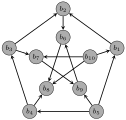
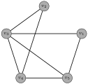

Chapter 11 Additional Graph Theory
A
digraph (or
directed graph)
\(D\) consists of a set
\(V\) of vertices and a set
\(E\) of
directed edges (or
arrows), each of which is represented as an ordered pair
\((u,v)\text{,}\) where
\(u,v\in V\text{.}\) We say that
\(u\) is the
initial vertex and
\(v\) is the
terminal vertex of the directed edge
\((u,v)\text{.}\) We write
\(D=(V,E)\) as we did with undirected graphs. The
indegree of a vertex
\(v\) in a digraph, denoted
\({\deg^-(v)}\text{,}\) is the number of directed edges that have
\(v\) as a terminal vertex while the
outdegree of
\(v\text{,}\) denoted
\({\deg^+(v)}\text{,}\) is the number of edges having
\(v\) as an initial vertex.
Problem 11.1.
Find the indegree and outdegree of each vertex in the following graph.

Digraph with vertices
\(b_1,\ldots,b_{10}\) and directed edges
\((b_1,b_2)\text{,}\) \((b_3,b_2)\text{,}\) \((b_5,b_4)\text{,}\) \((b_4,b_3)\text{,}\) \((b_5,b_1)\text{,}\) \((b_{10},b_1)\text{,}\) \((b_{10},b_7)\text{,}\) \((b_7,b_9)\text{,}\) \((b_9,b_6)\text{,}\) \((b_6,b_8)\text{,}\) \((b_{10},b_8)\text{,}\) \((b_2,b_6)\text{,}\) \((b_3,b_7)\text{,}\) \((b_4,b_8)\text{,}\) and
\((b_5,b_9)\text{.}\)
As expected, we have the following result that is analogous to the Handshake Lemma (
Theorem 10.14).
Theorem 11.2.
If \(D = (V,E)\) is a digraph, then
\begin{equation*}
|E|=\sum_{v \in V} \deg^-(v) = \sum_{v \in V} \deg^+(v)\text{.}
\end{equation*}
Each graph/digraph is determined by its vertices and the manner in which they are connected by edges, not the way a graph/digraph might be sketched. We can represent a graph in a couple of ways.
The
adjacency list of a simple graph lists all vertices in one column and all adjacent vertices in second column. For a digraph, the columns contain the initial vertices and the associated terminal vertices.
Problem 11.3.
Make up a couple examples to explore adjacency lists for simple graphs and digraphs.
An
\(m\times n\) matrix \(A\) is a rectangular array of numbers with
\(m\) rows and
\(n\) columns. The entry in the
\(i\)th row and
\(j\)th column is indicated by
\(A_{i,j}\text{.}\)
Example 11.4.
The example below is a \(2 \times 3\) matrix:
\begin{equation*}
A = \left[\begin{array}{rrr} 2 \amp 3 \amp 5 \\ 10 \amp 6 \amp 7 \end{array} \right]
\end{equation*}
In this example,
\(A_{1,2} = 3\text{.}\)
The
adjacency matrix \(A\) of a graph (respectively, digraph)
\(G\) with vertices listed as
\(v_1, v_2, \dots,
v_n\) is the
\(n\times n\) matrix
\(A\) whose entry
\(A_{i,j}\) in row
\(i\) and column
\(j\) is the number of edges connecting
\(v_i\) and
\(v_j\) (respectively, the number of edges from
\(v_i\) to
\(v_j\)).
Problem 11.5.
Find the adjacency matrix for the following graph.

Graph with vertices
\(v_1,v_2,v_3,v_4,v_5\) and edges
\(\multiset{v_2,v_3}\text{,}\) \(\multiset{v_3,v_4}\text{,}\) \(\multiset{v_4,v_5}\text{,}\) \(\multiset{v_5,v_1}\text{,}\) \(\multiset{v_2,v_4}\text{,}\) \(\multiset{v_3,v_1}\text{,}\) and
\(\multiset{v_3,v_5}\text{.}\)
Problem 11.6.
What properties will the adjacency matrix for a simple graph have?
Problem 11.7.
Sketch a graph that has the following adjacency matrix.
\begin{equation*}
A = \left[\begin{array}{rrrrr} 1\amp 0\amp 1\amp 0\amp 1 \\ 0\amp 1\amp 1\amp 0\amp 1 \\ 1\amp 1\amp 0 \amp 0\amp 1\\ 0\amp 0\amp 0\amp 0\amp 2 \\ 1\amp 1\amp 1 \amp 2 \amp 0 \end{array} \right]
\end{equation*}
Problem 11.8.
Sketch a digraph that has the following adjacency matrix.
\begin{equation*}
A = \left[\begin{array}{rrrrr} 0\amp 1\amp 0\amp 1\amp 1 \\ 0\amp 0\amp 1\amp 1\amp 1 \\ 1\amp 0\amp 0 \amp 0\amp 1\\ 0\amp 0\amp 0\amp 0\amp 0 \\ 1\amp 1\amp 1 \amp 2 \amp 0 \end{array} \right]
\end{equation*}
Problem 11.9.
What will the adjacency matrix for
\(P_n\) look like, assuming the vertices are taken in the natural order (start at one end of the path and end at the other)? What about
\(C_n\text{?}\) \(K_n\text{?}\)
Recall that a graph is not determined by a sketch since many sketches give the same graph. It may be hard to recognize from sketches whether two graphs are “essentially” the same even though the vertices may be different points. The notion of isomorphism (same form) gives us a way to deal with this. Two
simple graphs
\(G_1 = (V_1, E_1)\) and
\(G_2 = (V_2, E_2)\) are the
isomorphic, written
\(G_1 \cong G_2\text{,}\) if there is a a bijection
\(f:V_1\to V_2\) such that
\(\{u,v\}\) is an edge in
\(G_1\) if and only if
\(\{f(u),f(v)\}\) is an edge in
\(G_2\text{.}\) The function
\(f\) is called an
isomorphism. For digraphs, we require that
\((u,v)\) is a directed edge in
\(G_1\) if and only if
\((f(u),f(v))\) is a directed edge in
\(G_2\text{.}\)
For \(G_1=(V_1,E_1)\) and \(G_2=(V_2,E_2)\text{,}\) to show that \(G_1\cong G_2\text{:}\)
-
State a vertex matching explicitly, and
-
Either
-
Check adjacency for each pair of vertices in
\(G_1\) and the corresponding pair in
\(G_2\) (a total of
\(\binom{|V_1|}{2}\) checks). This could also be as simple as providing sketches for each graph that clearly exhibit the correspondence of vertices and edges.
-
Demonstrate that the adjacency matrices of
\(G_1\) and
\(G_2\) are the same using an ordering that is compatible with the vertex matching.
Warning! The second method above usually involves much less writing, but be aware that the adjacency matrices may differ in one ordering but agree with a different ordering.
The simplest way to show that \(G_1 \not\cong G_2\) is to show that a feature preserved under isomorphism (called an invariant) holds for one graph but not the other. Here are a few isomorphic invariants:
-
-
Number of edges in the graph
-
Number of vertices of a given degree
-
-
Vertices of degree
\(k\) and
\(\ell\) are adjacent
-
Subgraph that is isomorphic to
\(C_n\) or
\(P_n\text{.}\)
Problem 11.10.
Determine whether the following graphs are isomorphic.

Graph
\(G\) with vertices
\(a_1,\ldots,a_6\) and edges
\(\multiset{a_1,a_2}\text{,}\) \(\multiset{a_2,a_3}\text{,}\) \(\multiset{a_3,a_6}\text{,}\) \(\multiset{a_6,a_5}\text{,}\) \(\multiset{a_5,a_4}\text{,}\) \(\multiset{a_4,a_1}\text{,}\) and
\(\multiset{a_2,a_5}\text{.}\)

Graph
\(H\) with vertices
\(b_1,\ldots,b_6\) and edges
\(\multiset{b_1,b_2}\text{,}\) \(\multiset{b_2,b_3}\text{,}\) \(\multiset{b_3,b_6}\text{,}\) \(\multiset{b_6,b_5}\text{,}\) \(\multiset{b_5,b_4}\text{,}\) \(\multiset{b_4,b_1}\text{,}\) and
\(\multiset{b_1,b_6}\text{.}\)
Problem 11.11.
Let
\(G\) be the graph with vertex set
\(V=\{a,b,c,d,e\}\) and edge set
\(E=\{\{a,b\},\{a,c\},\{a,e\},\{b,d\},\{b,e\},\{c,d\}\}\) and let
\(H\) be the following graph.

Graph
\(H\) with vertices
\(a,b,c,d,e\) and edges
\(\multiset{e,d}\text{,}\) \(\multiset{d,c}\text{,}\) \(\multiset{c,b}\text{,}\) \(\multiset{a,d}\text{,}\) \(\multiset{e,b}\text{,}\) and
\(\multiset{a,c}\text{.}\)
Determine whether
\(G\) and
\(H\) are isomorphic.
Problem 11.12.
Determine which pairs of the following graphs are isomorphic.

Graph
\(G\) with vertices
\(a,b,c,d,e,f\) and edges
\(\multiset{a,d}\text{,}\) \(\multiset{d,f}\text{,}\) \(\multiset{f,c}\text{,}\) \(\multiset{c,a}\text{,}\) \(\multiset{a,b}\text{,}\) \(\multiset{b,e}\text{,}\) and
\(\multiset{c,d}\text{.}\)

Graph
\(H\) with vertices
\(g,h,i,j,k,l\) and edges
\(\multiset{h,i}\text{,}\) \(\multiset{i,j}\text{,}\) \(\multiset{j,k}\text{,}\) \(\multiset{k,l}\text{,}\) \(\multiset{g,l}\text{,}\) \(\multiset{h,l}\text{,}\) and
\(\multiset{i,k}\text{.}\)

Graph
\(K\) with vertices
\(p,q,r,s,t,u\) and edges
\(\multiset{s,r}\text{,}\) \(\multiset{r,q}\text{,}\) \(\multiset{q,p}\text{,}\) \(\multiset{p,t}\text{,}\) \(\multiset{t,u}\text{,}\) \(\multiset{u,r}\text{,}\) and
\(\multiset{t,q}\text{.}\)
Problem 11.13.
Determine whether the following digraphs are isomorphic.

Digraph
\(G\) with vertices
\(a_1,\ldots,a_8\) and directed edges
\((a_1,a_2)\text{,}\) \((a_2,a_3)\text{,}\) \((a_3,a_4)\text{,}\) \((a_4,a_1)\text{,}\) \((a_6,a_5)\text{,}\) \((a_5,a_8)\text{,}\) \((a_8,a_7)\text{,}\) \((a_7,a_6)\text{,}\) \((a_2,a_6)\text{,}\) \((a_1,a_5)\text{,}\) \((a_4,a_8)\text{,}\) and
\((a_3,a_7)\text{.}\)

Digraph
\(H\) with vertices
\(b_1,\ldots,b_8\) and directed edges
\((b_2,b_1)\text{,}\) \((b_3,b_2)\text{,}\) \((b_4,b_3)\text{,}\) \((b_1,b_4)\text{,}\) \((b_6,b_2)\text{,}\) \((b_5,b_1)\text{,}\) \((b_8,b_4)\text{,}\) \((b_7,b_3)\text{,}\) \((b_6,b_5)\text{,}\) \((b_5,b_8)\text{,}\) \((b_8,b_7)\text{,}\) and
\((b_7,b_6)\text{.}\)
We now introduce several new terms.
-
A
walk in a graph is an alternating sequence of vertices and edges that starts with a vertex and ends with a vertex such that consecutive vertices in the walk are the endpoints of the edge that separates them. In a simple graph, a walk can be specified by a sequence of vertices.
-
The
length of a walk is the number of edges in the walk.
-
If the initial and terminal vertices of a walk are the same, then the walk is a
closed walk.
-
A
trail is a walk with distinct edges (no repeated edges).
-
A
circuit is a closed trail, that is, a closed walk with no repeated edges.
-
A
path is a walk with distinct vertices. This is a subgraph isomorphic to
\(P_n\) for some
\(n\text{.}\)
-
A
cycle is a closed walk with distinct vertices except the initial and terminal vertices. This corresponds to a subgraph isomorphic to
\(C_n\) for some
\(n\text{.}\)
-
A graph
\(G\) is
connected if for each pair of distinct vertices
\(u\) and
\(v\text{,}\) there is a walk from
\(u\) to
\(v\text{.}\) A
component of a graph is a connected subgraph that is not contained in a larger connected subgraph.
-
A
cut vertex of a connected graph
\(G\) is a vertex which when removed along with all incident edges results in a disconnected graph.
-
A
bridge (or
cut edge) is an edge of a connected graph which when removed results in a disconnected graph.
The following theorem likely does not come as a surprise.
Theorem 11.14.
A graph
\(G\) is connected if and only if for each pair of distinct vertices
\(u\) and
\(v\text{,}\) there is a path from
\(u\) to
\(v\text{.}\)
A digraph is
strongly connected if for each pair of distinct vertices
\(u\) and
\(v\) there is a (directed) walk from
\(u\) to
\(v\text{.}\) A digraph is
weakly connected if the underlying undirected graph in which the direction of edges is removed is connected. Note that a strongly connected digraph will always be weakly connected. A
strongly connected component of a digraph is a maximal strongly connected subgraph.
We now introduce a couple of important circuits that a graph may or may not possess. An
Euler circuit in a graph
\(G\) is a circuit that contains every edge of the graph. An
Euler trail in a graph is a trail that contains every edge of the graph. Note that an Euler circuit is also an Euler trail as well.
Problem 11.15.
Determine whether each of the following graphs has an Euler trail. How about an Euler circuit?

Graph
\(G\) with vertices
\(a,b,c,d\) and edges
\(\multiset{b,d}\text{,}\) \(\multiset{c,d}\text{,}\) \(\multiset{d,a}\text{,}\) two copies of
\(\multiset{c,b}\text{,}\) and two copies of
\(\multiset{b,a}\text{.}\)

Graph
\(H\) with vertices
\(b_1,\ldots,b_6\) and edges
\(\multiset{b_1,b_2}\text{,}\) \(\multiset{b_2,b_3}\text{,}\) \(\multiset{b_3,b_6}\text{,}\) \(\multiset{b_6,b_5}\text{,}\) \(\multiset{b_5,b_4}\text{,}\) \(\multiset{b_4,b_1}\text{,}\) and
\(\multiset{b_1,b_6}\text{.}\)

Graph
\(K\) with vertices
\(v_1,v_2,v_3,v_4,v_5\) and edges
\(\multiset{v_2,v_3}\text{,}\) \(\multiset{v_3,v_4}\text{,}\) \(\multiset{v_4,v_5}\text{,}\) \(\multiset{v_5,v_1}\text{,}\) \(\multiset{v_2,v_4}\text{,}\) \(\multiset{v_3,v_1}\text{,}\) \(\multiset{v_3,v_5}\text{,}\) \(\multiset{v_2,v_5}\text{,}\) \(\multiset{v_1,v_4}\text{,}\) and
\(\multiset{v_1,v_2}\text{.}\)
Theorem 11.16.
If
\(G\) is a connected graph of order
\(n \ge 2\text{,}\) then
\(G\) has an Euler circuit if and only if every vertex is even.
Corollary 11.17.
If
\(G\) is a connected graph of order
\(n \geq 2\text{,}\) then
\(G\) has an Euler trail that is not a circuit if and only if
\(G\) has exactly two odd vertices.
Edges can be added to a connected graph in order to cause it to have an Euler circuit (or trail). In particular, an
Eulerization of a connected graph is the addition of suitable multiple edges (i.e., duplicate existing edges) to permit an Euler circuit, mimicking what must be done to complete a circuit such as a postal route or other delivery/pick-up route.
Problem 11.18.
Eulerize the following graph.

A
\(4\times 3\) grid graph, with four columns and three rows.
A cycle in a graph that passes through every vertex is a
Hamilton cycle. This is often called a
Hamilton circuit. A
Hamilton path is a path in a graph that includes every vertex.
Problem 11.19.
Determine whether each of the following graphs has a Hamilton circuit or a Hamilton path that is not a circuit.

Graph
\(G\text{,}\) a
\(4\times 3\) grid graph with four columns and three rows.

Graph
\(H\text{,}\) a
\(5\times 5\) grid graph with five columns and five rows.
Unfortunately, unlike the situation for Euler circuits, there is no known simple necessary and sufficient condition for a Hamilton cycle to exist in a graph. We can state some simple cases when one cannot exist, and there are some theorems for the existence of a Hamilton cycle, but these do not cover all possibilities.
Theorem 11.20. Dirac’s Theorem.
If
\(G\) is a simple graph of order
\(n \ge 3\) in which
\(\deg(v) \geq n/2\) for each vertex, then
\(G\) has a Hamilton cycle.
Theorem 11.21. Ore’s Theorem.
If
\(G\) is a simple graph of order
\(n \geq 3\) in which
\(\deg(u) + \deg(v) \geq n\) for each pair of vertices
\(u\) and
\(v\text{,}\) then
\(G\) has a Hamilton cycle.
Problem 11.22.
How many distinct Hamilton cycles does
\(K_n\) have that start/end at a fixed vertex?
We now turn our attention to trees. A
tree is a connected graph that has no cycles. A
forest is a graph in which every connected component is a tree. Trees provide a useful structure for organizing data, for displaying organization, and for decision processes.
Problem 11.23.
Is every tree necessarily a simple graph?
Theorem 11.24.
A graph
\(G\) is a tree if and only if for each pair of distinct vertices
\(u\) and
\(v\text{,}\) there is a unique path from
\(u\) to
\(v\text{.}\)
Theorem 11.25.
Some properties of trees.
-
A tree of order 2 or more has at least two vertices of degree 1.
-
Every edge of a tree is a bridge.
-
A connected graph in which every edge is a bridge is a tree.
-
A tree of order
\(n\) has
\(n-1\) edges.
-
A connected graph of order
\(n\) with
\(n-1\) edges is a tree.
A
spanning tree of a simple graph
\(G\) is a subgraph
\(T\) of
\(G\) such that
\(T\) is a tree contains every vertex of
\(G\text{.}\)
Problem 11.26.
Find a spanning tree for each of the following.

Graph
\(G\text{,}\) a
\(4\times 3\) grid graph with four columns and three rows.

Graph
\(H\text{,}\) a
\(5\times 5\) grid graph with five columns and five rows.
Problem 11.27.
Do you think every connected simple graph contains a spanning tree?
In fact, we have the following theorem.
Theorem 11.28.
A simple graph
\(G\) is connected if and only if it contains a spanning tree.
Below, we provide informal descriptions of the depth-first and breadth-first algorithms for identifying a spanning tree in a connected simple graph
\(G\) with vertices ordered as
\(v_1, v_2, \dots, v_n\text{.}\)
Depth-First Search. Initialize: \(T = \{v_1\}\text{,}\) \(v = v_1\text{.}\) As long as \(T\) does not contain all vertices, do the following:
-
Choose the first vertex
\(w\) in the ordered list that is adjacent to
\(v\) and is not yet in
\(T\text{.}\) If there are no vertices adjacent to
\(v\) that are not yet in
\(T\text{,}\) return to the most recently added previous vertex
\(u\) and let
\(v = u\) and repeat this step with the revised
\(v\text{.}\)
-
Add
\(w\) and edge
\(\{v,w\}\) to
\(T\text{.}\)
-
Repeat the steps above (with revised
\(v\)’s) as often as needed.
Breadth-First Search. Initialize: \(T = \{v_1\}\text{,}\) \(L = v_1\text{.}\) As long as \(T\) does not contain all vertices, do the following.
-
Put
\(v =\) the first vertex in
\(L\text{.}\)
-
Remove that vertex from
\(L\text{.}\) (On paper, just mark out.)
-
For all vertices adjacent to \(v\) not yet in \(T\text{,}\)
-
If
\(w\) is the first vertex in order that is adjacent to
\(v\) and not yet in
\(T\text{,}\) add
\(w\) and edge
\(\{v,w\}\) to
\(T\) and put
\(w\) at the end of list
\(L\text{.}\)
-
Repeat until all vertices adjacent to
\(v\) not yet in
\(T\) have been examined.
Repeat the above steps as needed.
A
weighted graph is a graph with a positive numerical values assigned to each edge of the graph. A
minimal spanning tree of a connected weighted graph is a spanning tree that has the smallest possible sum of weights for its edges.
Minimal spanning trees arose in the practical matter of designing an efficient electrical network, and the concept applies to similar network notions in many areas such as transportation, utilities, and others. We will discuss one early, elementary, and effective algorithms for finding a minimal spanning tree in a connected undirected weighted graph.
Prim’s Algorithm (Jarnik 1930, Prim 1957). Assume \(G\) is a connected, undirected, weighted loopless graph of order \(n\text{.}\)
-
Initialize a tree with a single vertex, chosen arbitrarily from the graph.
-
Grow the tree by one edge: Of the edges that connect the tree to vertices not yet in the tree, find a minimum-weight edge, and transfer it to the tree.
-
Repeat step 2 (until all vertices are in the tree).
Prim’s Algorithm is an example of a greedy algorithm.
Problem 11.29.
Make up an example of a connected, undirected, weighted loopless graph and find a minimal spanning tree.